library(tidyverse)
library(gmodels)
library(readxl)
library(summarytools)
library(epitools)Sep 27 Session
ggplot Review
ebola_data <- read_excel('data/Ebola_Sierra Leone.xlsx') %>%
mutate(age_group = case_when(
age < 18 ~ 'minor',
age >= 18 & age < 65 ~ "adult",
age >= 65 ~ 'senior'
),
sex = factor(sex, labels = c('female', 'male')),
status = factor(status, labels = c('negative', 'positive')),
age_group = factor(age_group, levels = c('minor', 'adult', 'senior') )
)
ebola_data# A tibble: 11,903 × 9
id age sex status date_of_onset date_of_sample district
<dbl> <dbl> <fct> <fct> <dttm> <dttm> <chr>
1 1 20 female positive 2014-05-18 00:00:00 2014-05-23 00:00:00 Kailahun
2 2 42 female positive 2014-05-20 00:00:00 2014-05-25 00:00:00 Kailahun
3 3 45 female positive 2014-05-20 00:00:00 2014-05-25 00:00:00 Kailahun
4 4 15 female positive 2014-05-21 00:00:00 2014-05-26 00:00:00 Kailahun
5 5 19 female positive 2014-05-21 00:00:00 2014-05-26 00:00:00 Kailahun
6 6 55 female positive 2014-05-21 00:00:00 2014-05-26 00:00:00 Kailahun
7 7 50 female positive 2014-05-21 00:00:00 2014-05-26 00:00:00 Kailahun
8 8 8 female positive 2014-05-22 00:00:00 2014-05-27 00:00:00 Kailahun
9 9 54 female positive 2014-05-22 00:00:00 2014-05-27 00:00:00 Kailahun
10 10 57 female positive 2014-05-22 00:00:00 2014-05-27 00:00:00 Kailahun
# ℹ 11,893 more rows
# ℹ 2 more variables: chiefdom <chr>, age_group <fct>Histograms
ebola_data %>%
ggplot(aes(x = age)) +
geom_histogram(fill = 'orange', color = 'black') +
labs(title = 'Age Distribution',
x = 'Age',
y = 'Count') +
theme_minimal()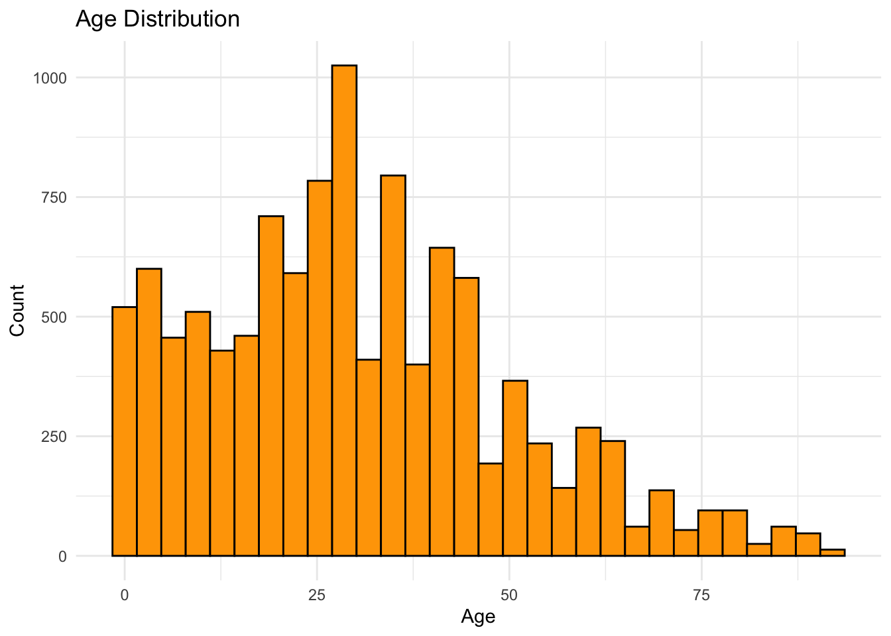
Boxplots
ebola_data %>%
drop_na(sex) %>%
ggplot(aes(y = age, x = sex, fill = sex)) +
geom_boxplot() +
labs(title = 'Age Distribution by Sex',
x = 'Sex',
y = 'Age') +
theme_minimal() +
theme(legend.position = 'none',
plot.title = element_text(hjust = 0.5))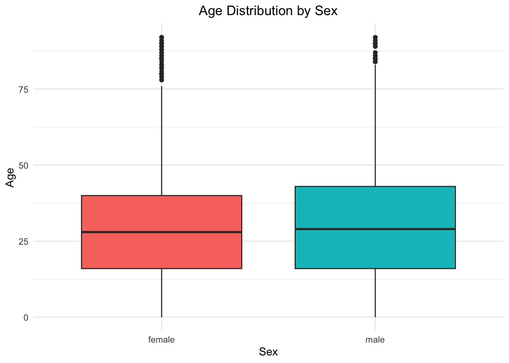
Epicurves
epicurve_data <- ebola_data %>%
filter(status == "positive") %>%
group_by(date_of_onset) %>%
summarise(count = n())
epicurve_data# A tibble: 387 × 2
date_of_onset count
<dttm> <int>
1 2014-05-18 00:00:00 1
2 2014-05-20 00:00:00 2
3 2014-05-21 00:00:00 4
4 2014-05-22 00:00:00 6
5 2014-05-26 00:00:00 1
6 2014-05-27 00:00:00 3
7 2014-05-29 00:00:00 7
8 2014-05-30 00:00:00 7
9 2014-05-31 00:00:00 2
10 2014-06-01 00:00:00 5
# ℹ 377 more rowsepicurve_data %>%
ggplot(aes(x = date_of_onset, y = count)) +
geom_col(fill = 'darkgreen') +
labs(title = 'New Cases by Day',
x = 'Date of Onset',
y = 'Cases') +
theme_minimal()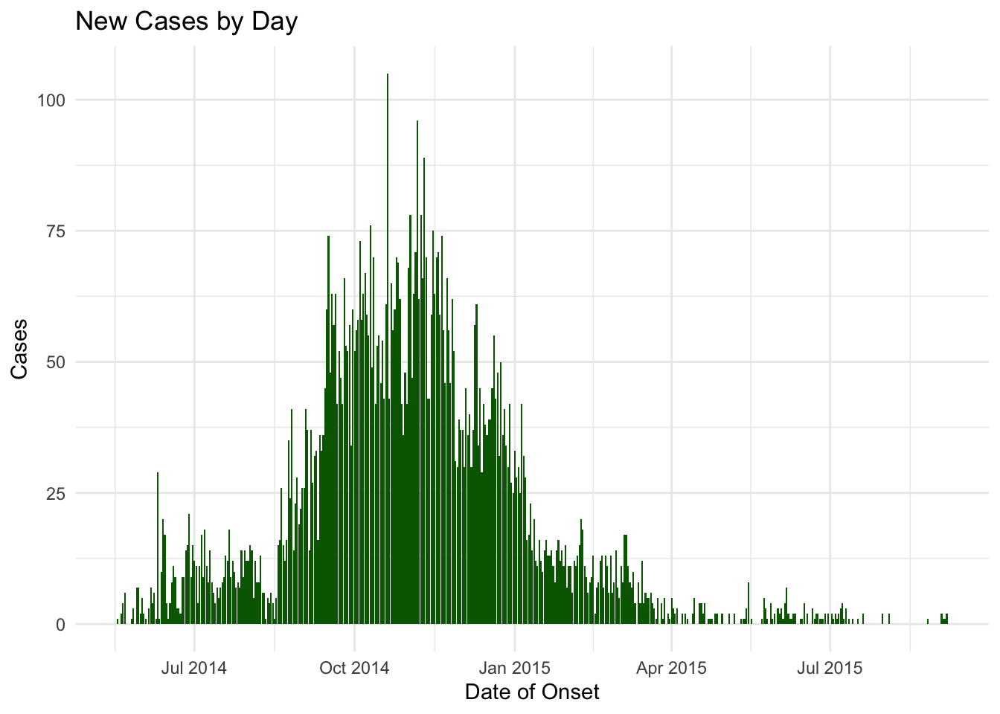
epicurve_data <- ebola_data %>%
drop_na(sex) %>%
filter(status == "positive") %>%
group_by(district, date_of_onset) %>%
summarise(count = n())
epicurve_data %>%
ggplot(aes(x = date_of_onset, y = count)) +
geom_col(fill = 'darkgreen') +
labs(title = 'New Cases by Day',
x = 'Date of Onset',
y = 'Cases') +
theme_minimal() +
facet_wrap(~district)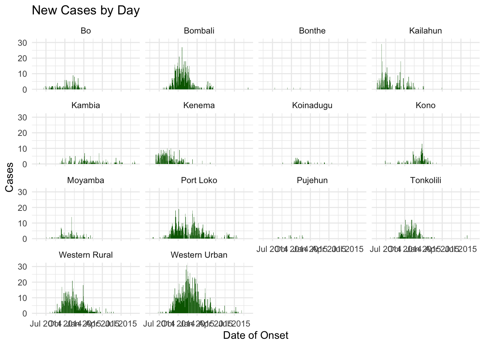
ebola_data %>%
drop_na(sex) %>%
filter(status == "positive") %>%
mutate(weekly_cases = floor_date(date_of_onset, unit = 'week')) %>%
group_by(district, weekly_cases) %>%
summarise(count = n()) %>%
ggplot(aes(x = weekly_cases, y = count)) +
geom_col(fill = 'royalblue') +
labs(title = 'New Cases by Month',
x = 'Date of Onset',
y = 'Cases') +
theme_minimal()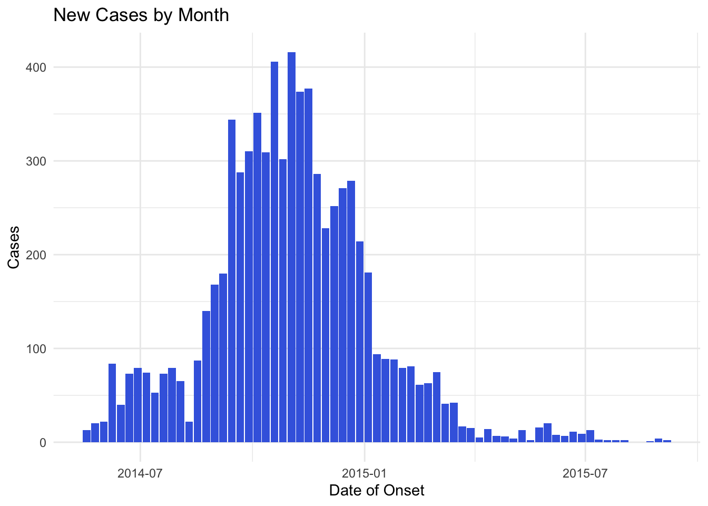
ebola_data %>%
drop_na(sex) %>%
filter(status == "positive") %>%
mutate(weekly_cases = floor_date(date_of_onset, unit = 'week')) %>%
group_by(district, weekly_cases) %>%
summarise(count = n()) %>%
ggplot(aes(x = weekly_cases, y = count)) +
geom_col(fill = 'royalblue') +
facet_wrap(~district) +
labs(title = 'New Cases by Week by District',
x = 'Date of Onset',
y = 'Cases') +
theme_minimal()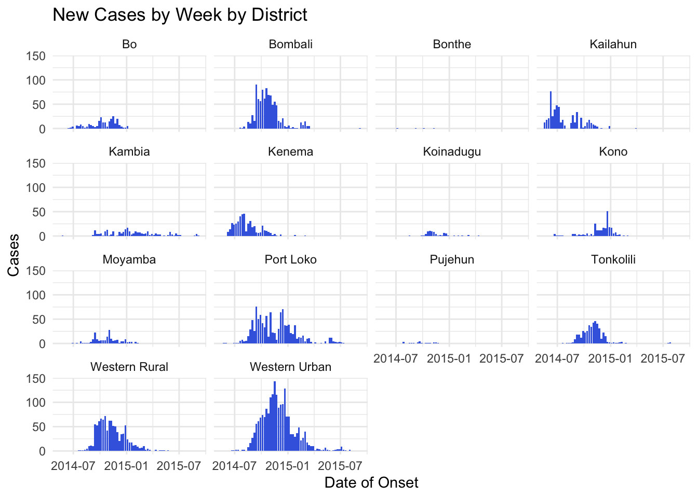
ebola_data %>%
drop_na(sex) %>%
filter(status == "positive") %>%
mutate(weekly_cases = floor_date(date_of_onset, unit = 'week')) %>%
group_by(sex, weekly_cases) %>%
summarise(count = n()) %>%
ggplot(aes(x = weekly_cases, y = count, fill = sex)) +
geom_col(color = 'black') +
scale_fill_manual(values = c('pink', 'blue'))+
labs(title = 'New Cases by Month by Sex',
x = 'Date of Onset',
y = 'Cases') +
theme_minimal()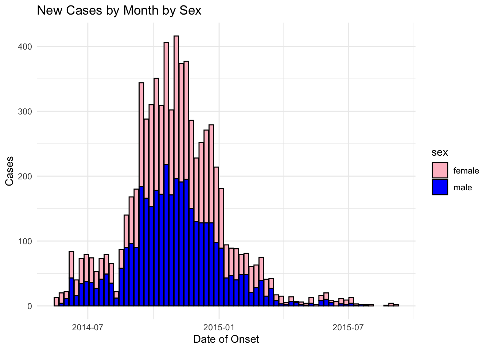
ebola_data %>%
drop_na(sex) %>%
filter(status == "positive") %>%
mutate(monthly_cases = floor_date(date_of_onset, unit = 'months')) %>%
group_by(district, monthly_cases) %>%
summarise(count = n()) %>%
ggplot(aes(x = monthly_cases, y = count)) +
geom_col(fill = 'darkorange') +
labs(title = 'New Cases by Month',
x = 'Date of Onset',
y = 'Cases') +
theme_minimal()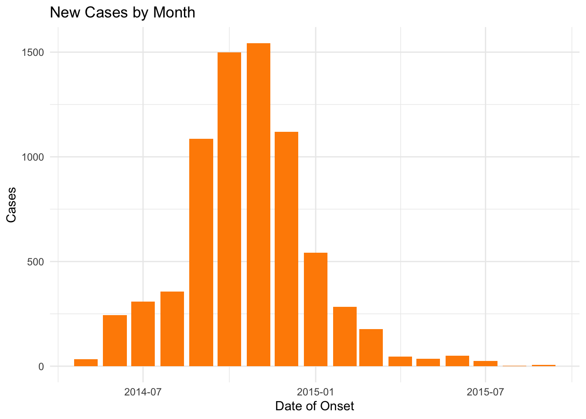
ebola_data %>%
drop_na(age_group) %>%
filter(status == "positive") %>%
mutate(monthly_cases = floor_date(date_of_onset, unit = 'months')) %>%
group_by(age_group, monthly_cases) %>%
summarise(count = n()) %>%
ggplot(aes(x = monthly_cases, y = count, fill = age_group)) +
geom_col() +
scale_fill_manual(values = c('gold', '#a2a2a2', 'black'))+
labs(title = 'New Cases by Month by Age Group',
x = 'Date of Onset',
y = 'Cases') +
theme_minimal()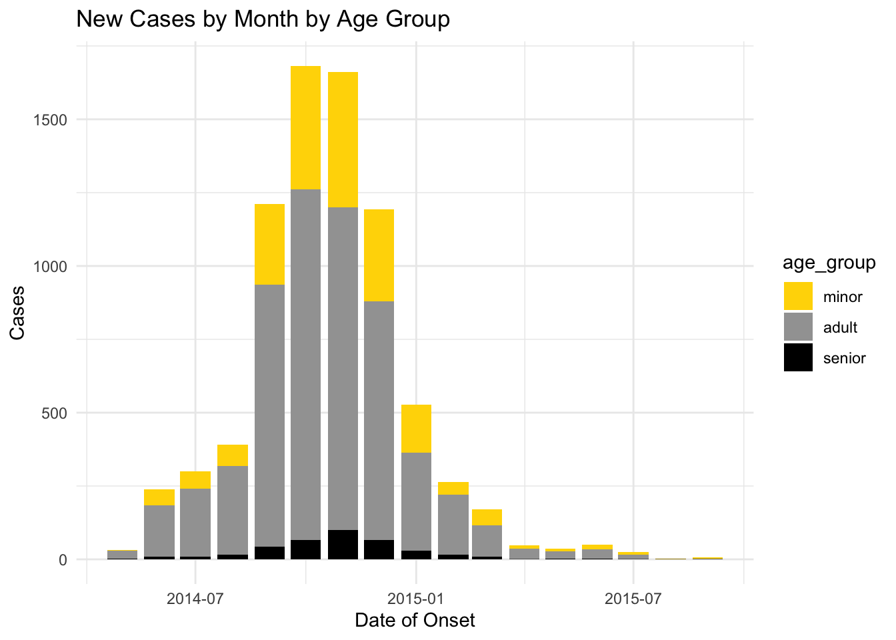
ebola_data %>%
drop_na(age_group) %>%
filter(status == "positive") %>%
mutate(monthly_cases = floor_date(date_of_onset, unit = 'months')) %>%
group_by(age_group, monthly_cases) %>%
summarise(count = n()) %>%
ggplot(aes(x = monthly_cases, y = count, fill = age_group)) +
geom_col(position = 'dodge') +
scale_fill_manual(values = c('gold', '#a2a2a2', 'black'))+
labs(title = 'New Cases by Month by Age Group',
x = 'Date of Onset',
y = 'Cases') +
theme_minimal()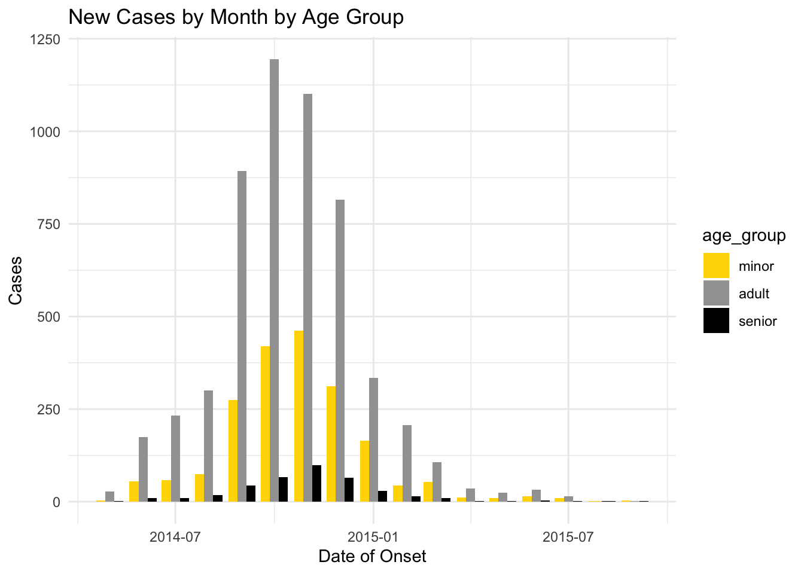
ebola_data %>%
drop_na() %>%
filter(status == "positive") %>%
mutate(monthly_cases = floor_date(date_of_onset, unit = 'months')) %>%
group_by(district, monthly_cases) %>%
summarise(count = n()) %>%
ggplot(aes(x = monthly_cases, y = count)) +
geom_col(fill = 'darkorange') +
labs(title = 'New Cases by Month by District',
x = 'Date of Onset',
y = 'Cases') +
facet_wrap(~district) +
theme_minimal()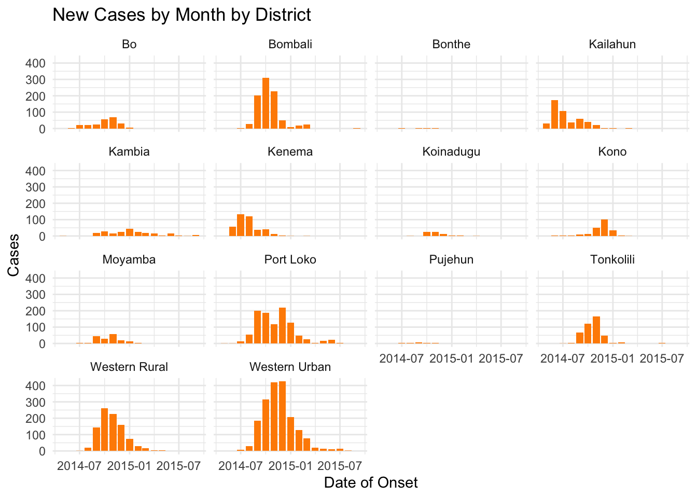
ebola_data %>%
drop_na(sex) %>%
filter(status == "positive") %>%
mutate(monthly_cases = floor_date(date_of_onset, unit = 'months')) %>%
group_by(sex, monthly_cases) %>%
summarise(count = n()) %>%
ggplot(aes(x = monthly_cases, y = count, fill = sex)) +
geom_col() +
scale_fill_manual(values = c('pink', 'blue')) +
labs(title = 'New Cases by Month by District',
x = 'Date of Onset',
y = 'Cases') +
facet_wrap(~sex) +
theme_minimal() +
theme(legend.position = 'none')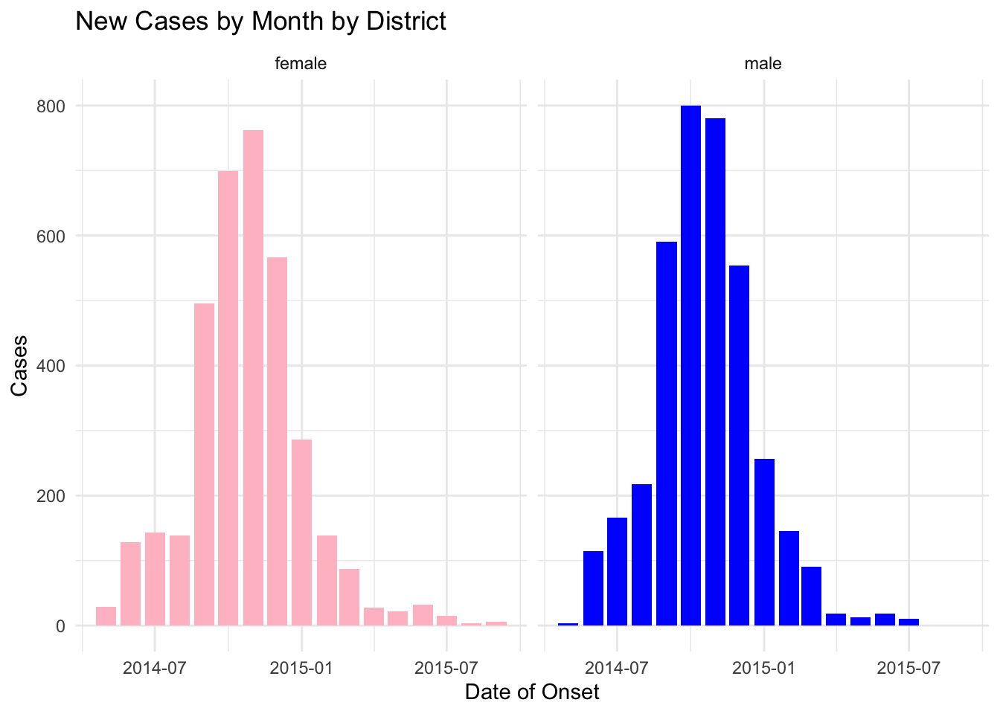
Proportion and Frequency Tables
CrossTable
CrossTable(ebola_data$age_group, ebola_data$status, chisq = TRUE)
Cell Contents
|-------------------------|
| N |
| Chi-square contribution |
| N / Row Total |
| N / Col Total |
| N / Table Total |
|-------------------------|
Total Observations in Table: 10947
| ebola_data$status
ebola_data$age_group | negative | positive | Row Total |
---------------------|-----------|-----------|-----------|
minor | 1005 | 1970 | 2975 |
| 30.444 | 12.071 | |
| 0.338 | 0.662 | 0.272 |
| 0.323 | 0.251 | |
| 0.092 | 0.180 | |
---------------------|-----------|-----------|-----------|
adult | 1731 | 5494 | 7225 |
| 50.006 | 19.826 | |
| 0.240 | 0.760 | 0.660 |
| 0.557 | 0.701 | |
| 0.158 | 0.502 | |
---------------------|-----------|-----------|-----------|
senior | 372 | 375 | 747 |
| 120.582 | 47.808 | |
| 0.498 | 0.502 | 0.068 |
| 0.120 | 0.048 | |
| 0.034 | 0.034 | |
---------------------|-----------|-----------|-----------|
Column Total | 3108 | 7839 | 10947 |
| 0.284 | 0.716 | |
---------------------|-----------|-----------|-----------|
Statistics for All Table Factors
Pearson's Chi-squared test
------------------------------------------------------------
Chi^2 = 280.7367 d.f. = 2 p = 1.093479e-61
freq()
ebola_data %>%
select(sex, age, district, chiefdom, age_group) %>%
freq()Frequencies
ebola_data$sex
Type: Factor
Freq % Valid % Valid Cum. % Total % Total Cum.
------------ ------- --------- -------------- --------- --------------
female 4719 48.02 48.02 39.65 39.65
male 5109 51.98 100.00 42.92 82.57
<NA> 2075 17.43 100.00
Total 11903 100.00 100.00 100.00 100.00
ebola_data$district
Type: Character
Freq % Valid % Valid Cum. % Total % Total Cum.
------------------- ------- --------- -------------- --------- --------------
Bo 606 5.09 5.09 5.09 5.09
Bombali 1190 10.00 15.09 10.00 15.09
Bonthe 84 0.71 15.79 0.71 15.79
Kailahun 570 4.79 20.58 4.79 20.58
Kambia 421 3.54 24.12 3.54 24.12
Kenema 780 6.55 30.67 6.55 30.67
Koinadugu 157 1.32 31.99 1.32 31.99
Kono 551 4.63 36.62 4.63 36.62
Moyamba 449 3.77 40.39 3.77 40.39
Port Loko 1701 14.29 54.68 14.29 54.68
Pujehun 124 1.04 55.73 1.04 55.73
Tonkolili 583 4.90 60.62 4.90 60.62
Western Rural 1522 12.79 73.41 12.79 73.41
Western Urban 3165 26.59 100.00 26.59 100.00
<NA> 0 0.00 100.00
Total 11903 100.00 100.00 100.00 100.00
ebola_data$chiefdom
Type: Character
Freq % Valid % Valid Cum. % Total % Total Cum.
----------------------- ------- ---------- -------------- ---------- --------------
Badjia 9 0.0756 0.0756 0.0756 0.0756
Bagbo 7 0.0588 0.1344 0.0588 0.1344
Bagbwe 2 0.0168 0.1512 0.0168 0.1512
Bagruwa 30 0.2520 0.4033 0.2520 0.4033
Banta Gbangbatote 40 0.3360 0.7393 0.3360 0.7393
Banta Mokele 3 0.0252 0.7645 0.0252 0.7645
Baoma 41 0.3445 1.1090 0.3445 1.1090
Barri 7 0.0588 1.1678 0.0588 1.1678
Bendu Cha 3 0.0252 1.1930 0.0252 1.1930
Biriwa 21 0.1764 1.3694 0.1764 1.3694
Bkm 67 0.5629 1.9323 0.5629 1.9323
Bombali Sebora 665 5.5868 7.5191 5.5868 7.5191
Bramaia 7 0.0588 7.5779 0.0588 7.5779
Bum 13 0.1092 7.6871 0.1092 7.6871
Bumpe Ngawo 65 0.5461 8.2332 0.5461 8.2332
Bumpeh 50 0.4201 8.6533 0.4201 8.6533
Buya Romende 185 1.5542 10.2075 1.5542 10.2075
Dama 3 0.0252 10.2327 0.0252 10.2327
Dasse 9 0.0756 10.3083 0.0756 10.3083
Dea 2 0.0168 10.3251 0.0168 10.3251
Dema 7 0.0588 10.3839 0.0588 10.3839
Dibia 29 0.2436 10.6276 0.2436 10.6276
Dodo 6 0.0504 10.6780 0.0504 10.6780
Fakunya 95 0.7981 11.4761 0.7981 11.4761
Fiama 5 0.0420 11.5181 0.0420 11.5181
Folasaba Dembelia 2 0.0168 11.5349 0.0168 11.5349
Freetowm 891 7.4855 19.0204 7.4855 19.0204
Gallinas-Perri 11 0.0924 19.1128 0.0924 19.1128
Gaura 27 0.2268 19.3397 0.2268 19.3397
Gbane 13 0.1092 19.4489 0.1092 19.4489
Gbane Kandor 3 0.0252 19.4741 0.0252 19.4741
Gbanti-Kamaranka 17 0.1428 19.6169 0.1428 19.6169
Gbense 193 1.6214 21.2383 1.6214 21.2383
Gbinle-Dixing 37 0.3108 21.5492 0.3108 21.5492
Gbo 23 0.1932 21.7424 0.1932 21.7424
Gbonkolenken 88 0.7393 22.4817 0.7393 22.4817
Gorama Kono 5 0.0420 22.5237 0.0420 22.5237
Gorama Mende 47 0.3949 22.9186 0.3949 22.9186
Imperi 15 0.1260 23.0446 0.1260 23.0446
Jaiama Bongor 21 0.1764 23.2210 0.1764 23.2210
Jawei 187 1.5710 24.7921 1.5710 24.7921
Jawie 11 0.0924 24.8845 0.0924 24.8845
Jong 21 0.1764 25.0609 0.1764 25.0609
Kafe Simiria 10 0.0840 25.1449 0.0840 25.1449
Kaffu Bullom 364 3.0581 28.2030 3.0581 28.2030
Kaiyamba 52 0.4369 28.6398 0.4369 28.6398
Kakua 285 2.3944 31.0342 2.3944 31.0342
Kalansongoia 4 0.0336 31.0678 0.0336 31.0678
Kamajei 6 0.0504 31.1182 0.0504 31.1182
Kamara 34 0.2856 31.4038 0.2856 31.4038
Kandu Leppiama 17 0.1428 31.5467 0.1428 31.5467
Kargboro 46 0.3865 31.9331 0.3865 31.9331
Kasonko 4 0.0336 31.9667 0.0336 31.9667
Kholifa 152 1.2770 33.2437 1.2770 33.2437
Kholifa Mabang 31 0.2604 33.5042 0.2604 33.5042
Kissi Kama 10 0.0840 33.5882 0.0840 33.5882
Kissi Teng 52 0.4369 34.0250 0.4369 34.0250
Kissi Tonge 21 0.1764 34.2015 0.1764 34.2015
Komboya 16 0.1344 34.3359 0.1344 34.3359
Kongbora 3 0.0252 34.3611 0.0252 34.3611
Konike Barina 17 0.1428 34.5039 0.1428 34.5039
Konike Sanda 85 0.7141 35.2180 0.7141 35.2180
Kori 35 0.2940 35.5121 0.2940 35.5121
Kowa 2 0.0168 35.5289 0.0168 35.5289
Koya 216 1.8147 37.3435 1.8147 37.3435
Kpaka 4 0.0336 37.3771 0.0336 37.3771
Kpanda Kemo 7 0.0588 37.4359 0.0588 37.4359
Kpanga Kabonde 23 0.1932 37.6292 0.1932 37.6292
Lei 5 0.0420 37.6712 0.0420 37.6712
Libeisaygahun 2 0.0168 37.6880 0.0168 37.6880
Lokomasam 180 1.5122 39.2002 1.5122 39.2002
Lower Bambara 112 0.9409 40.1411 0.9409 40.1411
Luawa 57 0.4789 40.6200 0.4789 40.6200
Lugbu 16 0.1344 40.7544 0.1344 40.7544
Mafindor 7 0.0588 40.8132 0.0588 40.8132
Maforki 226 1.8987 42.7119 1.8987 42.7119
Magbema 173 1.4534 44.1653 1.4534 44.1653
Makari Gbanti 281 2.3607 46.5261 2.3607 46.5261
Makpele 30 0.2520 46.7781 0.2520 46.7781
Malal Mara 36 0.3024 47.0806 0.3024 47.0806
Malegohun 4 0.0336 47.1142 0.0336 47.1142
Malema 9 0.0756 47.1898 0.0756 47.1898
Malen 14 0.1176 47.3074 0.1176 47.3074
Mambolo 61 0.5125 47.8199 0.5125 47.8199
Mandu 7 0.0588 47.8787 0.0588 47.8787
Mano-Sakrim 4 0.0336 47.9123 0.0336 47.9123
Marampa 270 2.2683 50.1806 2.2683 50.1806
Masimera 110 0.9241 51.1048 0.9241 51.1048
Masungbala 22 0.1848 51.2896 0.1848 51.2896
Neini 139 1.1678 52.4574 1.1678 52.4574
Neya 1 0.0084 52.4658 0.0084 52.4658
Ngowahun 33 0.2772 52.7430 0.2772 52.7430
Niawa 4 0.0336 52.7766 0.0336 52.7766
Niawa Lenga 21 0.1764 52.9530 0.1764 52.9530
Nimikoro 80 0.6721 53.6251 0.6721 53.6251
Nimiyama 58 0.4873 54.1124 0.4873 54.1124
Njaluahun 53 0.4453 54.5577 0.4453 54.5577
Nomo 1 0.0084 54.5661 0.0084 54.5661
Nongoba Bullom 5 0.0420 54.6081 0.0420 54.6081
Nongowa 527 4.4275 59.0355 4.4275 59.0355
Paki Masabong 63 0.5293 59.5648 0.5293 59.5648
Panga Krim 1 0.0084 59.5732 0.0084 59.5732
Peje Bongre 53 0.4453 60.0185 0.4453 60.0185
Peje West 17 0.1428 60.1613 0.1428 60.1613
Pejeh 5 0.0420 60.2033 0.0420 60.2033
Penguia 2 0.0168 60.2201 0.0168 60.2201
Ribbi 72 0.6049 60.8250 0.6049 60.8250
Safroko Limba 28 0.2352 61.0602 0.2352 61.0602
Samu 40 0.3360 61.3963 0.3360 61.3963
Sanda Loko 23 0.1932 61.5895 0.1932 61.5895
Sanda Magbolontor 10 0.0840 61.6735 0.0840 61.6735
Sanda Tendaren 15 0.1260 61.7995 0.1260 61.7995
Sandor 33 0.2772 62.0768 0.2772 62.0768
Selenga 4 0.0336 62.1104 0.0336 62.1104
Sella Limba 32 0.2688 62.3792 0.2688 62.3792
Simbaru 8 0.0672 62.4464 0.0672 62.4464
Small Bo 12 0.1008 62.5473 0.1008 62.5473
Soa 10 0.0840 62.6313 0.0840 62.6313
Sogbini 12 0.1008 62.7321 0.1008 62.7321
Soro-Gbeima 12 0.1008 62.8329 0.1008 62.8329
Sowa 13 0.1092 62.9421 0.1092 62.9421
Tambakka 10 0.0840 63.0261 0.0840 63.0261
Tane 68 0.5713 63.5974 0.5713 63.5974
Tankoro 104 0.8737 64.4711 0.8737 64.4711
Tikonko 60 0.5041 64.9752 0.5041 64.9752
Timidale 6 0.0504 65.0256 0.0504 65.0256
Tms 47 0.3949 65.4205 0.3949 65.4205
Toli 1 0.0084 65.4289 0.0084 65.4289
Tonko Limba 81 0.6805 66.1094 0.6805 66.1094
Tunkia 2 0.0168 66.1262 0.0168 66.1262
Upper Bambara 67 0.5629 66.6891 0.5629 66.6891
Valunia 25 0.2100 66.8991 0.2100 66.8991
W/Rural 1146 9.6278 76.5269 9.6278 76.5269
W/Urban 2274 19.1044 95.6314 19.1044 95.6314
Wandor 7 0.0588 95.6902 0.0588 95.6902
Wara Wara Bafodea 1 0.0084 95.6986 0.0084 95.6986
Wara Wara Yagala 10 0.0840 95.7826 0.0840 95.7826
Waterloo 376 3.1589 98.9414 3.1589 98.9414
Wunde 11 0.0924 99.0339 0.0924 99.0339
Yawbeco 1 0.0084 99.0423 0.0084 99.0423
Yawei 22 0.1848 99.2271 0.1848 99.2271
Yoni 92 0.7729 100.0000 0.7729 100.0000
<NA> 0 0.0000 100.0000
Total 11903 100.0000 100.0000 100.0000 100.0000
ebola_data$age_group
Type: Factor
Freq % Valid % Valid Cum. % Total % Total Cum.
------------ ------- --------- -------------- --------- --------------
minor 2975 27.18 27.18 24.99 24.99
adult 7225 66.00 93.18 60.70 85.69
senior 747 6.82 100.00 6.28 91.97
<NA> 956 8.03 100.00
Total 11903 100.00 100.00 100.00 100.00Bivariate Analysis
status_agegroup <- glm(status ~ age_group,
family = binomial("logit"),
data = ebola_data)
status_agegroup
Call: glm(formula = status ~ age_group, family = binomial("logit"),
data = ebola_data)
Coefficients:
(Intercept) age_groupadult age_groupsenior
0.6730 0.4819 -0.6650
Degrees of Freedom: 10946 Total (i.e. Null); 10944 Residual
(956 observations deleted due to missingness)
Null Deviance: 13060
Residual Deviance: 12800 AIC: 12800exp(cbind(OR = coef(status_agegroup), confint(status_agegroup))) OR 2.5 % 97.5 %
(Intercept) 1.9601990 1.8173389 2.1156116
age_groupadult 1.6191662 1.4748515 1.7771668
age_groupsenior 0.5142664 0.4371759 0.6048812epitools::oddsratio(ebola_data$age_group, ebola_data$status)$data
Outcome
Predictor negative positive Total
minor 1005 1970 2975
adult 1731 5494 7225
senior 372 375 747
Total 3108 7839 10947
$measure
odds ratio with 95% C.I.
Predictor estimate lower upper
minor 1.0000000 NA NA
adult 1.6191324 1.4748148 1.7772363
senior 0.5143457 0.4372438 0.6050383
$p.value
two-sided
Predictor midp.exact fisher.exact chi.square
minor NA NA NA
adult 0.000000e+00 1.112954e-23 2.485058e-24
senior 1.221245e-15 1.211354e-15 5.193963e-16
$correction
[1] FALSE
attr(,"method")
[1] "median-unbiased estimate & mid-p exact CI"Multivariate Analysis
status_age_sex <- glm(status ~ age + sex,
family = binomial('logit'),
data = ebola_data)
status_age_sex
Call: glm(formula = status ~ age + sex, family = binomial("logit"),
data = ebola_data)
Coefficients:
(Intercept) age sexmale
1.358222 -0.003537 -0.129823
Degrees of Freedom: 9084 Total (i.e. Null); 9082 Residual
(2818 observations deleted due to missingness)
Null Deviance: 9902
Residual Deviance: 9887 AIC: 9893exp(cbind(OR = coef(status_age_sex), confint(status_age_sex))) OR 2.5 % 97.5 %
(Intercept) 3.8892707 3.5106812 4.3129895
age 0.9964694 0.9940460 0.9989078
sexmale 0.8782506 0.7966662 0.9680358sex_by_status <- table(ebola_data$sex, ebola_data$status)
sex_by_status
negative positive
female 1142 3577
male 1330 3779epiR::epi.2by2(sex_by_status, method = "cohort.count") Outcome+ Outcome- Total Inc risk *
Exposure+ 1142 3577 4719 24.20 (22.98 to 25.45)
Exposure- 1330 3779 5109 26.03 (24.83 to 27.26)
Total 2472 7356 9828 25.15 (24.30 to 26.02)
Point estimates and 95% CIs:
-------------------------------------------------------------------
Inc risk ratio 0.93 (0.87, 1.00)
Inc odds ratio 0.91 (0.83, 0.99)
Attrib risk in the exposed * -1.83 (-3.55, -0.12)
Attrib fraction in the exposed (%) -7.57 (-15.20, -0.46)
Attrib risk in the population * -0.88 (-2.36, 0.60)
Attrib fraction in the population (%) -3.50 (-4.75, -2.21)
-------------------------------------------------------------------
Uncorrected chi2 test that OR = 1: chi2(1) = 4.375 Pr>chi2 = 0.036
Fisher exact test that OR = 1: Pr>chi2 = 0.038
Wald confidence limits
CI: confidence interval
* Outcomes per 100 population units Anova Post Hoc
ebola_data_raw <- read_excel('data/Ebola_Sierra Leone.xlsx')
ebola_data_raw# A tibble: 11,903 × 8
id age sex status date_of_onset date_of_sample district
<dbl> <dbl> <dbl> <dbl> <dttm> <dttm> <chr>
1 1 20 1 1 2014-05-18 00:00:00 2014-05-23 00:00:00 Kailahun
2 2 42 1 1 2014-05-20 00:00:00 2014-05-25 00:00:00 Kailahun
3 3 45 1 1 2014-05-20 00:00:00 2014-05-25 00:00:00 Kailahun
4 4 15 1 1 2014-05-21 00:00:00 2014-05-26 00:00:00 Kailahun
5 5 19 1 1 2014-05-21 00:00:00 2014-05-26 00:00:00 Kailahun
6 6 55 1 1 2014-05-21 00:00:00 2014-05-26 00:00:00 Kailahun
7 7 50 1 1 2014-05-21 00:00:00 2014-05-26 00:00:00 Kailahun
8 8 8 1 1 2014-05-22 00:00:00 2014-05-27 00:00:00 Kailahun
9 9 54 1 1 2014-05-22 00:00:00 2014-05-27 00:00:00 Kailahun
10 10 57 1 1 2014-05-22 00:00:00 2014-05-27 00:00:00 Kailahun
# ℹ 11,893 more rows
# ℹ 1 more variable: chiefdom <chr>aov(status ~ sex, data = ebola_data_raw)Call:
aov(formula = status ~ sex, data = ebola_data_raw)
Terms:
sex Residuals
Sum of Squares 0.8237 1849.4034
Deg. of Freedom 1 9826
Residual standard error: 0.4338379
Estimated effects may be unbalanced
2075 observations deleted due to missingnesssummary(aov(status ~ sex, data = ebola_data_raw)) Df Sum Sq Mean Sq F value Pr(>F)
sex 1 0.8 0.8237 4.377 0.0365 *
Residuals 9826 1849.4 0.1882
---
Signif. codes: 0 '***' 0.001 '**' 0.01 '*' 0.05 '.' 0.1 ' ' 1
2075 observations deleted due to missingnessSurvival Analysis
# Install once if needed
# install.packages(c("tidyverse", "lubridate", "survival", "survminer", "broom"))
library(tidyverse)
library(lubridate)
library(survival)
library(survminer)
library(broom)
# 1) READ DATA ---------------------------------------------------------------
# Replace the path if needed
df_raw <- readr::read_csv("data/Ebola_Simulated.csv",
show_col_types = FALSE)
# Peek
glimpse(df_raw)Rows: 5,829
Columns: 11
$ case_id <chr> "d1fafd", "53371b", "f5c3d8", "6c286a", "0f58c…
$ generation <dbl> 0, 1, 1, 2, 2, 0, 3, 3, 2, 3, 4, 3, 4, 2, 4, 4…
$ date_of_infection <date> NA, 2014-04-09, 2014-04-18, NA, 2014-04-22, 2…
$ date_of_onset <date> 2014-04-07, 2014-04-15, 2014-04-21, 2014-04-2…
$ date_of_hospitalisation <date> 2014-04-17, 2014-04-20, 2014-04-25, 2014-04-2…
$ date_of_outcome <date> 2014-04-19, NA, 2014-04-30, 2014-05-07, 2014-…
$ outcome <dbl> NA, NA, 0, 1, 0, NA, 0, 1, 0, 1, NA, 0, 0, 0, …
$ gender <dbl> 0, 1, 0, 0, 0, 0, 0, 0, 1, 1, 0, 0, 0, 0, 0, 1…
$ hospital <dbl> 2, 1, 5, NA, 5, NA, 1, 3, 5, 4, 1, 1, NA, 4, 3…
$ longitude <dbl> -13.21799, -13.21491, -13.22804, -13.23112, -1…
$ latitude <dbl> 8.473514, 8.464927, 8.483356, 8.464776, 8.4521…# Expected columns in this file:
# case_id, generation, date_of_infection, date_of_onset, date_of_hospitalisation,
# date_of_outcome, outcome (0=recovered, 1=death), gender (0/1), hospital, longitude, latitude
# 2) CLEAN & BUILD SURVIVAL OBJECT ------------------------------------------
df <- df_raw %>%
mutate(
# Parse dates
date_of_onset = ymd(date_of_onset),
date_of_outcome = ymd(date_of_outcome),
# Event indicator: death = 1, otherwise censored
status = case_when(
outcome == 1 ~ 1L, # died
TRUE ~ 0L # recovered or unknown -> treat as censored
),
# Time origin: symptom onset (you can change the origin if your question differs)
# Time-to-event in DAYS
time = as.numeric(difftime(date_of_outcome, date_of_onset, units = "days"))
) %>%
# Keep rows with a defined onset and non-negative time
filter(!is.na(date_of_onset), !is.na(time), time >= 0) %>%
mutate(
gender = factor(gender, levels = c(0,1), labels = c("Female","Male")),
hospital = factor(hospital), # treat as categorical site indicator
generation = as.integer(generation)
)
summary(df$time) Min. 1st Qu. Median Mean 3rd Qu. Max.
1.00 6.00 10.00 11.92 16.00 64.00 table(df$status, useNA = "ifany")
0 1
2659 2044 table(df$gender, useNA = "ifany")
Female Male
2361 2342 # Survival object
surv_obj <- Surv(time = df$time, event = df$status)
# 2a) Overall KM -------------------------------------------------------------
fit_km_overall <- survfit(surv_obj ~ 1, data = df)
summary(fit_km_overall)Call: survfit(formula = surv_obj ~ 1, data = df)
time n.risk n.event survival std.err lower 95% CI upper 95% CI
1 4703 30 0.994 0.00116 0.991 0.996
2 4664 74 0.978 0.00215 0.974 0.982
3 4549 155 0.945 0.00335 0.938 0.951
4 4319 208 0.899 0.00443 0.890 0.908
5 4024 222 0.849 0.00529 0.839 0.860
6 3700 217 0.800 0.00596 0.788 0.811
7 3321 193 0.753 0.00649 0.741 0.766
8 2982 175 0.709 0.00691 0.696 0.723
9 2662 152 0.668 0.00726 0.654 0.683
10 2372 113 0.637 0.00750 0.622 0.652
11 2134 125 0.599 0.00777 0.584 0.615
12 1889 95 0.569 0.00797 0.554 0.585
13 1647 60 0.548 0.00812 0.533 0.565
14 1481 44 0.532 0.00824 0.516 0.549
15 1326 32 0.519 0.00835 0.503 0.536
16 1179 48 0.498 0.00855 0.482 0.515
17 1026 27 0.485 0.00869 0.468 0.502
18 923 23 0.473 0.00883 0.456 0.491
19 819 8 0.468 0.00889 0.451 0.486
20 722 4 0.466 0.00894 0.449 0.484
21 641 12 0.457 0.00912 0.440 0.475
22 562 7 0.451 0.00925 0.434 0.470
23 498 6 0.446 0.00941 0.428 0.465
24 452 4 0.442 0.00953 0.424 0.461
25 394 4 0.437 0.00969 0.419 0.457
26 351 3 0.434 0.00985 0.415 0.453
27 309 1 0.432 0.00991 0.413 0.452
29 242 1 0.431 0.01003 0.411 0.451
38 75 1 0.425 0.01142 0.403 0.448# 2b) KM by gender -----------------------------------------------------------
fit_km_gender <- survfit(surv_obj ~ gender, data = df)
summary(fit_km_gender)Call: survfit(formula = surv_obj ~ gender, data = df)
gender=Female
time n.risk n.event survival std.err lower 95% CI upper 95% CI
1 2361 18 0.992 0.00179 0.989 0.996
2 2334 38 0.976 0.00314 0.970 0.982
3 2274 76 0.944 0.00477 0.934 0.953
4 2159 111 0.895 0.00637 0.883 0.908
5 2008 123 0.840 0.00766 0.825 0.855
6 1823 109 0.790 0.00858 0.773 0.807
7 1628 82 0.750 0.00921 0.732 0.768
8 1481 83 0.708 0.00978 0.689 0.728
9 1315 63 0.674 0.01020 0.655 0.695
10 1178 56 0.642 0.01058 0.622 0.663
11 1055 70 0.600 0.01103 0.578 0.622
12 923 42 0.572 0.01131 0.551 0.595
13 816 32 0.550 0.01154 0.528 0.573
14 730 20 0.535 0.01170 0.512 0.558
15 653 23 0.516 0.01193 0.493 0.540
16 579 26 0.493 0.01223 0.469 0.517
17 501 15 0.478 0.01244 0.454 0.503
18 441 12 0.465 0.01266 0.441 0.491
19 393 5 0.459 0.01277 0.435 0.485
20 352 1 0.458 0.01280 0.433 0.484
21 306 8 0.446 0.01315 0.421 0.472
22 271 6 0.436 0.01346 0.410 0.463
23 237 4 0.429 0.01373 0.403 0.456
24 215 1 0.427 0.01381 0.400 0.455
25 194 3 0.420 0.01411 0.393 0.449
26 174 1 0.418 0.01423 0.391 0.446
27 154 1 0.415 0.01440 0.388 0.444
29 126 1 0.412 0.01465 0.384 0.441
gender=Male
time n.risk n.event survival std.err lower 95% CI upper 95% CI
1 2342 12 0.995 0.00148 0.992 0.998
2 2330 36 0.980 0.00293 0.974 0.985
3 2275 79 0.945 0.00470 0.936 0.955
4 2160 97 0.903 0.00616 0.891 0.915
5 2016 99 0.859 0.00729 0.845 0.873
6 1877 108 0.809 0.00828 0.793 0.826
7 1693 111 0.756 0.00914 0.739 0.774
8 1501 92 0.710 0.00977 0.691 0.729
9 1347 89 0.663 0.01032 0.643 0.683
10 1194 57 0.631 0.01064 0.611 0.653
11 1079 55 0.599 0.01095 0.578 0.621
12 966 53 0.566 0.01124 0.545 0.589
13 831 28 0.547 0.01142 0.525 0.570
14 751 24 0.530 0.01160 0.507 0.553
15 673 9 0.523 0.01169 0.500 0.546
16 600 22 0.503 0.01195 0.481 0.527
17 525 12 0.492 0.01213 0.469 0.516
18 482 11 0.481 0.01232 0.457 0.505
19 426 3 0.477 0.01238 0.454 0.502
20 370 3 0.473 0.01248 0.450 0.499
21 335 4 0.468 0.01265 0.444 0.493
22 291 1 0.466 0.01271 0.442 0.492
23 261 2 0.463 0.01286 0.438 0.489
24 237 3 0.457 0.01313 0.432 0.483
25 200 1 0.454 0.01327 0.429 0.481
26 177 2 0.449 0.01360 0.423 0.477
38 37 1 0.437 0.01785 0.404 0.474# 2c) Log-rank test (gender) -------------------------------------------------
logrank_gender <- survdiff(surv_obj ~ gender, data = df)
logrank_genderCall:
survdiff(formula = surv_obj ~ gender, data = df)
N Observed Expected (O-E)^2/E (O-E)^2/V
gender=Female 2361 1030 1012 0.329 0.685
gender=Male 2342 1014 1032 0.323 0.685
Chisq= 0.7 on 1 degrees of freedom, p= 0.4 broom::tidy(logrank_gender) # gives chisq and p-value in a tidy tibble# A tibble: 2 × 4
gender N obs exp
<chr> <dbl> <dbl> <dbl>
1 Female 2361 1030 1012.
2 Male 2342 1014 1032.# Start with a simple model
cox1 <- coxph(surv_obj ~ gender, data = df)
summary(cox1)Call:
coxph(formula = surv_obj ~ gender, data = df)
n= 4703, number of events= 2044
coef exp(coef) se(coef) z Pr(>|z|)
genderMale -0.03589 0.96474 0.04424 -0.811 0.417
exp(coef) exp(-coef) lower .95 upper .95
genderMale 0.9647 1.037 0.8846 1.052
Concordance= 0.503 (se = 0.006 )
Likelihood ratio test= 0.66 on 1 df, p=0.4
Wald test = 0.66 on 1 df, p=0.4
Score (logrank) test = 0.66 on 1 df, p=0.4# Add additional covariates (example: generation and hospital as categorical site)
# Only include covariates that are well-populated (few NAs) and make clinical sense.
cox2 <- coxph(surv_obj ~ gender + generation + hospital, data = df)
summary(cox2)Call:
coxph(formula = surv_obj ~ gender + generation + hospital, data = df)
n= 3525, number of events= 1559
(1178 observations deleted due to missingness)
coef exp(coef) se(coef) z Pr(>|z|)
genderMale -0.018155 0.982009 0.050662 -0.358 0.7201
generation 0.007435 1.007463 0.004356 1.707 0.0878 .
hospital2 -0.009361 0.990683 0.069306 -0.135 0.8926
hospital3 0.046660 1.047766 0.091803 0.508 0.6113
hospital4 -0.101660 0.903336 0.090132 -1.128 0.2594
hospital5 0.050853 1.052168 0.068895 0.738 0.4604
---
Signif. codes: 0 '***' 0.001 '**' 0.01 '*' 0.05 '.' 0.1 ' ' 1
exp(coef) exp(-coef) lower .95 upper .95
genderMale 0.9820 1.0183 0.8892 1.085
generation 1.0075 0.9926 0.9989 1.016
hospital2 0.9907 1.0094 0.8649 1.135
hospital3 1.0478 0.9544 0.8752 1.254
hospital4 0.9033 1.1070 0.7571 1.078
hospital5 1.0522 0.9504 0.9193 1.204
Concordance= 0.518 (se = 0.008 )
Likelihood ratio test= 5.56 on 6 df, p=0.5
Wald test = 5.54 on 6 df, p=0.5
Score (logrank) test = 5.54 on 6 df, p=0.5# Tidy outputs with hazard ratios and CIs
tidy_cox2 <- broom::tidy(cox2, exponentiate = TRUE, conf.int = TRUE)
tidy_cox2# A tibble: 6 × 7
term estimate std.error statistic p.value conf.low conf.high
<chr> <dbl> <dbl> <dbl> <dbl> <dbl> <dbl>
1 genderMale 0.982 0.0507 -0.358 0.720 0.889 1.08
2 generation 1.01 0.00436 1.71 0.0878 0.999 1.02
3 hospital2 0.991 0.0693 -0.135 0.893 0.865 1.13
4 hospital3 1.05 0.0918 0.508 0.611 0.875 1.25
5 hospital4 0.903 0.0901 -1.13 0.259 0.757 1.08
6 hospital5 1.05 0.0689 0.738 0.460 0.919 1.20# Grambsch–Therneau test for PH assumption
ph_test <- cox.zph(cox2)
ph_test chisq df p
gender 0.98 1 0.322
generation 5.26 1 0.022
hospital 3.88 4 0.422
GLOBAL 9.66 6 0.140plot(ph_test) # diagnostic plots; look for no strong trends in residuals over time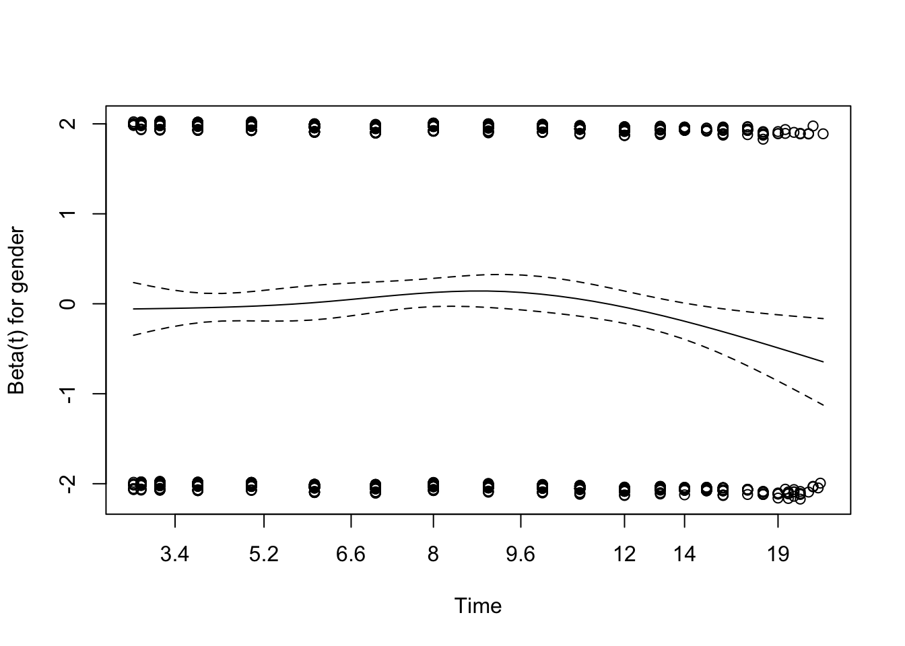
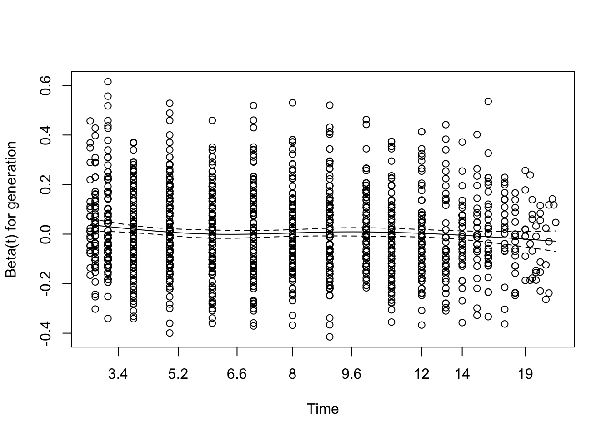
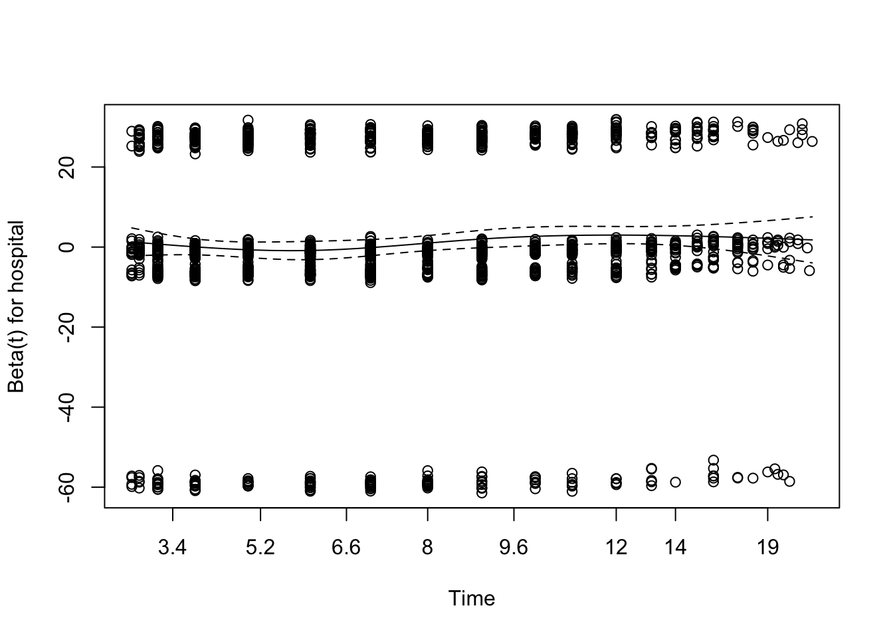
# 5a) KM curve: overall ------------------------------------------------------
p_overall <- ggsurvplot(
fit_km_overall,
data = df,
conf.int = TRUE,
risk.table = TRUE,
xlab = "Days since symptom onset",
ylab = "Survival probability",
title = "Overall Kaplan–Meier Survival",
ggtheme = theme_minimal(base_size = 13)
)
p_overall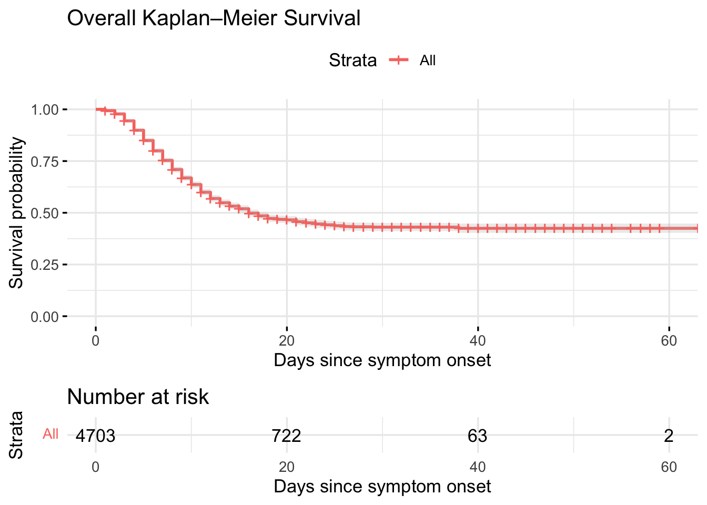
# 5b) KM stratified by gender -----------------------------------------------
p_gender <- ggsurvplot(
fit_km_gender,
data = df,
conf.int = TRUE,
risk.table = TRUE,
pval = TRUE, # shows log-rank p-value
xlab = "Days since symptom onset",
ylab = "Survival probability",
title = "Kaplan–Meier Survival by Gender",
legend.title = "Gender",
ggtheme = theme_minimal(base_size = 13)
)
p_gender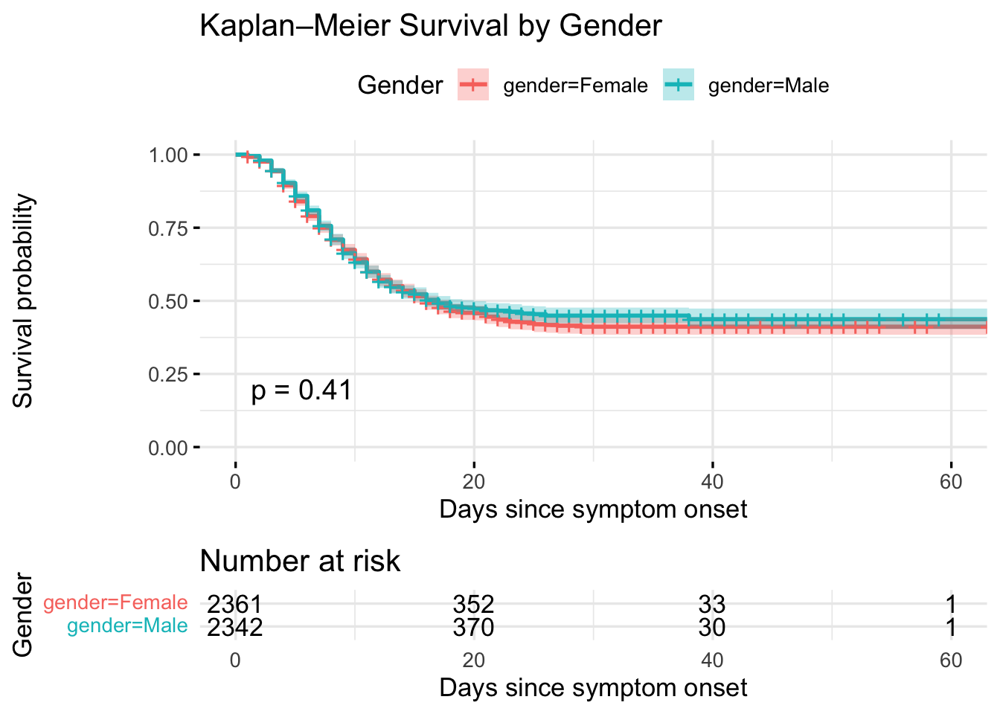